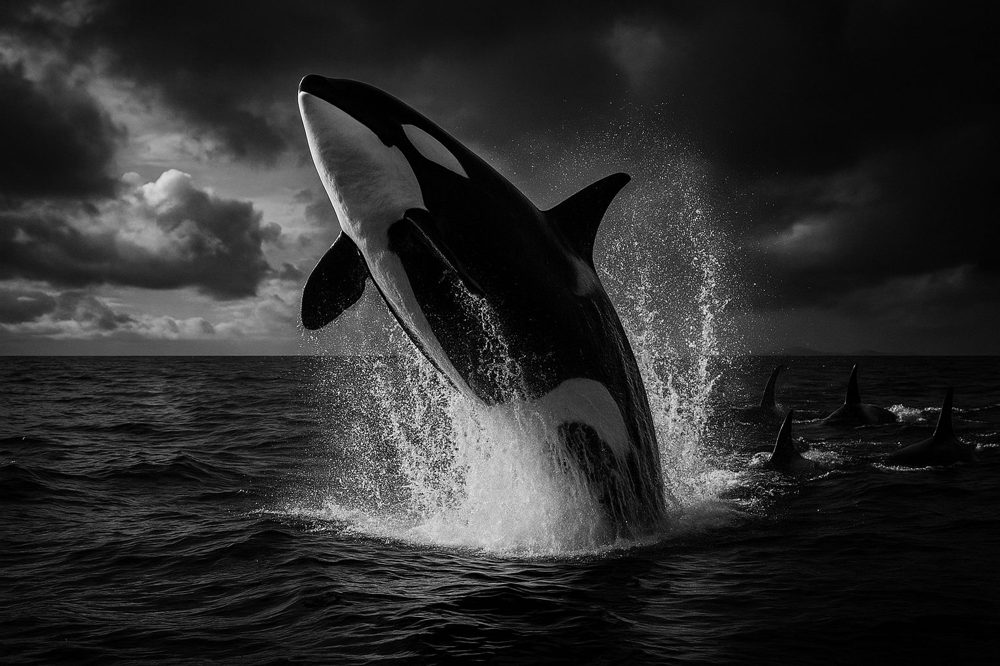

Monochrome field guide
Orcas are not just powerful, they are profoundly social.
Orcas, also known as killer whales, are apex predators found across the world’s oceans. Their lives are shaped by family bonds, learned hunting traditions, vocal identity, and remarkable ecological specialization.
Tap the button to surface a fascinating orca fact.

Why orcas fascinate scientists and the public
Orcas sit at the intersection of intelligence, cooperation, and ecological power. They are among the few non-human animals whose populations are often discussed in cultural as well as biological terms.
Distinct ecotypes
Different orca populations can specialize in different prey, habitats, and sound patterns, making “orca” a broad label for very different lifestyles.
Pod identity
Pods can be recognized by dialects, hunting traditions, and long-term social relationships that persist across decades.
Strategic predators
Wave-washing, coordinated chasing, tail-slapping fish, and shoreline ambushes all show behavioral flexibility.
Built for speed
With strong musculature and streamlined bodies, orcas can move quickly enough to pressure agile prey in open water.
Family continuity
Many offspring remain with their mothers for life, creating stable family groups with long-lived social continuity.
More than charisma
Orcas matter scientifically because they help reveal how intelligence, ecology, and culture can interact in the ocean.
Life journey in broad outline
- CalfNewborns stay close to their mothers and begin learning vocal patterns, pod spacing, and coordinated movement almost immediately.
- JuvenileYoung orcas learn through observation, play, and repeated exposure to the hunting style of their own community.
- AdultAdults become skilled hunters and dependable members of pod cooperation, often taking on prey-specific roles.
- ElderOlder females may become vital knowledge holders, especially in seasons when prey is harder to find.
“What makes orcas extraordinary is not just that they are formidable hunters. It is that their power is shaped by memory, learning, and social inheritance.”
Interpretive summary of why orcas remain such compelling marine animals
Visual moments
A small monochrome gallery that keeps the site elegant while giving it more presence than a text-only reference page.

Collective movement
Pods often move with striking cohesion, reinforcing the social dimension of orca life.

Surface presence
The contrast of black-and-white patterning is part of what makes orcas so visually memorable.